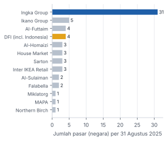
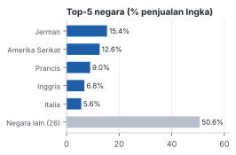
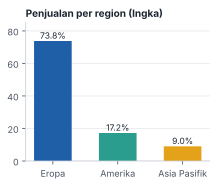
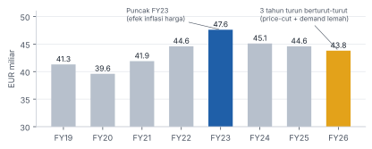
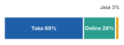
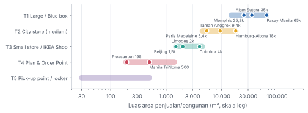
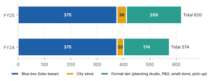
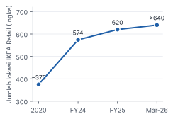
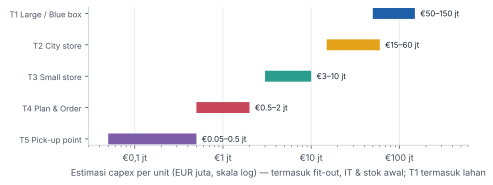
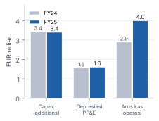

| 01 | Ringkasan eksekutif |
| 02 | Model bisnis & struktur franchise IKEA |
| 03 | Kinerja keuangan & posisi pasar (FY19–FY26) |
| 04 | Store concept: evolusi & tiering format toko |
| 05 | Jumlah toko per tier & contoh lokasi |
| 06 | Capex per toko & strategi investasi |
| 07 | Target market |
| 08 | Barang jualan (range, food, services) |
| 09 | Strategi marketing |
| 10 | Studi kasus: IKEA di Indonesia |
| 11 | SWOT & risiko |
| 12 | Implikasi & rekomendasi untuk perusahaan |
| A | Lampiran: metodologi, catatan data & daftar sumber |
IKEA melaporkan lewat dua entitas yang angkanya berbeda. Inter IKEA Group adalah pemilik merek dan franchisor, dan melaporkan total retail sales seluruh sistem (13 grup franchisee, 63 pasar). Ingka Group adalah franchisee terbesar (31 negara, ±87–88% penjualan IKEA) dan melaporkan revenue, jumlah toko per format, serta capex. Angka per format toko yang resmi hanya tersedia dari Ingka. Untuk franchisee lain, termasuk IKEA Indonesia, kami memakai data publik dan estimasi.
IKEA tidak mempublikasikan capex per toko. Rentang capex per tier di Bab 06 adalah estimasi analis dari benchmark proyek yang dipublikasikan (AS, India, Rumania, Inggris, Prancis) dan data aset tetap Ingka. Gunakan sebagai order of magnitude, bukan angka anggaran.
IKEA masih bertumpu pada toko besar di luar kota (blue box), tetapi pertumbuhan jaringan sekarang datang hampir seluruhnya dari format kecil: city store, small store ("IKEA Shop"), plan & order point, dan pick-up point. Semuanya disatukan oleh e-commerce dan fulfilment.
Model hub-and-spoke IKEA layak direplikasi: satu toko besar sebagai hub stok, pengalaman, dan fulfilment per metro, lalu spoke kecil yang dekat konsumen dengan capex 5–20× lebih rendah. Syaratnya: (1) kriteria tier berbasis catchment dan payback, (2) e-commerce serta fulfilment yang matang sebelum ekspansi spoke, (3) stage-gate evaluasi sebelum roll-out, dan (4) kebijakan exit yang tegas untuk lokasi yang underperform.
IKEA bukan satu perusahaan. Merek, konsep, desain produk, dan supply chain dipegang Inter IKEA Group. Operasional ritel dijalankan oleh 13 grup franchisee di 63 pasar. Model bisnisnya bertumpu pada low cost, high volume, low price.[1]
| Entitas | Peran |
|---|---|
| Inter IKEA Systems B.V. | Pemilik konsep IKEA dan franchisor global. Menerima franchise fee 3% dari penjualan franchisee. |
| IKEA of Sweden | Mendesain seluruh range produk (Democratic Design). |
| IKEA Supply / Industry | Sourcing dan distribusi. ±90% produk dibuat supplier eksternal; IKEA Industry memproduksi ±10%. |
| Franchisee (13 grup) | Mengoperasikan toko, e-commerce, dan layanan di wilayahnya. Membeli produk dari Inter IKEA. |
| Ingka Group | Franchisee terbesar (31 negara). Juga menjalankan Ingka Centres (37 mall) dan Ingka Investments. |
Sumber: Inter IKEA Financial Summary FY25 [1]; Ingka Annual Report FY25 [3].

| EUR juta | FY25 | FY24 |
|---|---|---|
| Revenue | 41.451 | 41.846 |
| Gross profit | 14.421 | 13.860 |
| Gross margin | 34,8% | 33,1% |
| Operating income | 1.464 | 1.253 |
| Operating margin | 3,5% | 3,0% |
| Net income | 1.411 | 806 |
| Total equity / aset | 48,4 / 61,5 mlr | 47,9 / 57,6 mlr |
Sumber: Ingka Annual Summary & Annual Report FY25 [3][4].



| Indikator | Nilai |
|---|---|
| Kunjungan toko (sistem) | 915 jt (+1,9%) |
| Volume penjualan (sistem) | +2,6% |
| Lokasi baru dibuka | 66 (Eropa 39, AmUt 16, Asia 6, TimTeng 5) |
| Kunjungan online (Ingka) | 4,0 mlr (+4,6%) |
| Co-worker (sistem) | 222.000 |
| Retail sales Ingka | €39,0 mlr (−1,6%) |
Sumber: [1][2][3].

Sampai 2015-an IKEA praktis hanya punya satu format: toko besar biru-kuning di pinggir kota dengan ±9.500 produk, parkir luas, restoran, dan jalur belanja satu arah. Sejak 2014–2019 (Hamburg-Altona, Madeleine Paris) IKEA membangun format urban. Prinsip yang dipegang Ingka: "no single format fits all markets."[8]

| Tier | Luas | Produk di toko | Lokasi & catchment | Peran dalam jaringan |
|---|---|---|---|---|
| T1 Large / Blue box | 15–65 rb m² umumnya 25–40 rb | ±9.000–9.500 (≈4.500 take-away) | Pinggir kota/akses tol, lahan 4–13 ha, parkir 1.000–2.000 mobil; catchment 1–2 jam berkendara | Hub: pengalaman penuh (showroom, Småland, restoran), stok, dan semakin sering jadi pusat fulfilment/pick-up untuk spoke dan online. |
| T2 City store (medium) | 4,5–18 rb m² umumnya 5–12 rb | ±2.600–4.100 | Pusat kota, mal, high street; akses transportasi umum; konsumen tanpa mobil | Brand flagship urban + inspirasi + planning; barang besar dikirim. Sering di mal milik sendiri (Ingka Centres). |
| T3 Small store / "IKEA Shop" | 1,5–4,5 rb m² | >2.000–3.000 (fokus kebutuhan sehari-hari) | Kota kecil–menengah, retail park, mal, area belanja harian | Spoke cepat buka (hitungan minggu), capex rendah; ada planning dan food terbatas; full range lewat pick-up/delivery. |
| T4 Plan & Order Point | 200–1.400 m² | Tanpa stok (display saja) | Mal, ruko, shop-in-shop (mis. di Best Buy, AS) | Konsultasi dan perencanaan dapur, lemari, kamar tidur; order untuk diantar; sebagian dengan pick-up. |
| T5 Pick-up point / locker | <500 m² | - | Parkir supermarket (mis. 100+ di Tesco, UK), mitra logistik, locker 24/7 | Memperluas jangkauan e-commerce dengan biaya minimal. |
Sumber: Ingka AR FY25 [3]; RetailDetail/IADS (Paris) [11]; Retail Dive, Patch, BusinessWorld, Crittenden (AS & Filipina) [13]; Fordaq/Invidis (IKEA Shop) [6]; IKEA UK [12].
Contoh: Jakarta Raya memiliki 2 hub besar (Alam Sutera, Jakarta Garden City), 1 toko medium (Sentul), dan 1 city store di mal (Taman Anggrek).
| Inisiatif | Contoh | Tujuan |
|---|---|---|
| Satu lantai khusus order online | IKEA Soroksár, Budapest | Mengubah blue box menjadi hub omnichannel. |
| Toko digital terintegrasi / mixed-use | IKEA Shanghai Linkong; Livat Shanghai (toko 21.620 m² di dalam 200.000 m² retail) | Blended online-offline; IKEA sebagai anchor mall milik sendiri. |
| Downsizing / relokasi | Borlänge (Swedia) pindah dari blue box ke format lebih kecil di mal Kupolen (2027) | Menyesuaikan kapasitas dengan demand lokal. |
| Shared retail dengan merek lain | Bersama Decathlon dekat London; pilot shop-in-shop dengan Best Buy di AS | Berbagi traffic dan biaya. |
| As-Is / second-hand area | 424 toko Ingka punya area As-Is; IKEA Pre-owned (Spanyol, Norwegia, Portugal) | Circularity dan traffic tambahan. |
Sumber: Ingka AR FY25 [3]; Metro Mode Nov 2026 [7]; Invidis Mar 2026 [6].

| Tier | Ingka FY25 | Global (semua franchisee) |
|---|---|---|
| T1 Large | 375 | ±480–500 toko tradisional (Statista: 494 per Okt 2025); FT: 519 toko global FY26 |
| T2 City store | 36 | Estimasi ±45–60 (termasuk Taman Anggrek & Surabaya di Indonesia) |
| T3–T5 Format lain | 209 | Tidak dipublikasikan. FY26: ±90 toko kecil dibuka secara global; target FY27 +50% |
| Total | 620 | Ingka >640 lokasi (Mar 2026), naik dari ±375 di 2020 |
Sumber: [3], [5], [6], Statista. Angka global T2–T5 adalah estimasi.

Ingka mengumumkan investasi >€2 mlr (US$2,2 mlr) untuk 3 tahun (2023–2026): 8 toko format tradisional dan 9 Plan & Order Point, ditambah modernisasi dan fulfilment.[10] Di FY25 IKEA AS membuka 14 lokasi baru (2 small store di Arcadia, CA dan San Marcos, TX; 9 P&O point dengan pick-up), mencatat penjualan US$5,3 mlr (US$1,9 mlr e-commerce), dan memiliki 61 lokasi. Rencana 2026 berisi 10 toko, termasuk city store pertama di Culver City, LA.[9] Di sisi lain, pada 2026 IKEA menutup toko besar Memphis, small store San Marcos (setahun setelah dibuka), serta P&O point di South Charlotte, Austin Domain, dan Fairfax.[7][19] Pola ini adalah test, learn, prune.
| Tier | Lokasi | Buka | Luas | Catatan strategi |
|---|---|---|---|---|
| T1 | Pasay City, Manila (Filipina) | 2021 | ±65.000 m² | Salah satu IKEA terbesar di dunia; anchor di area SM Mall of Asia. |
| T1 | Hyderabad (India) | 2018 | ±37.000 m² | Toko pertama di India; lahan 13 acre; investasi ±Rs 1.000 crore. |
| T1 | Alam Sutera, Tangerang (Indonesia) | 2014 | ±35.000 m² | Toko pertama di Indonesia; lahan 4,5 ha. |
| T1 | Memphis, Tennessee (AS) | 2016 | ±25.200 m² | Biaya ±US$65 jt. Ditutup Mei 2026 sebagai bagian dari restrukturisasi portofolio AS. |
| T2 | Hamburg-Altona (Jerman) | 2014 | ±18.000 m² | City store multi-lantai pertama di pusat kota (pedestrian area). |
| T2 | Bangkok city store (Thailand) | - | 12.000 m² | Format kota di dalam mal. |
| T2 | Mal Taman Anggrek, Jakarta | Apr 2022 | 9.400 m² | IKEA pertama di dalam mal di Indonesia; 2 lantai + area Click & Collect. |
| T2 | Ciputra World Surabaya | 2023 | ±9.000 m² | Lantai LG mal; masuk ke kota kedua terbesar Indonesia. |
| T2 | University Park, Dallas (AS) | 2026 | ±5.850 m² | ±3.200 item termasuk food. |
| T2 | La Madeleine, Paris (Prancis) | Mei 2019 | 5.400 m² | City store kecil pertama; 4.100 produk (1.500 take-away), sekitar seperempat toko biasa. Disusul Paris Italie Deux (2025). |
| T2 | Oxford Street, London (Inggris) | 2025 | ±5.800 m² | Gedung eks-Topshop dibeli £378 jt dan direnovasi; IKEA memakai sebagian lantai, sisanya disewakan. |
| T2 | Harajuku & Shibuya, Tokyo (Jepang) | 2020 | multi-lantai | City store di jantung Tokyo, format vertikal. |
| T3 | Coimbra-Taveiro (Portugal) | 2026 | >4.000 m² | Small store pertama di Portugal. |
| T3 | Limoges (Prancis) | 2026 | 2.000 m² | Bagian dari roll-out 20 small store di 6 negara (FR, DE, IT, ES, PT, CA). |
| T3 | Wangfujing WellTown, Beijing (China) | 2026 | 1.500 m² | >3.000 produk, planning, food; lokasi IKEA ke-5 di Beijing, menyusul small store Shenzhen. |
| T3 | Hammersmith, London (Inggris) | 2025 | ±1.000 m² | Toko high street pertama (pilot small format UK), sekitar 1/5 toko biasa; dekat stasiun. |
| T4 | Ayala TriNoma, Manila (Filipina) | 2025 | 500 m² | Plan & order + free collection point untuk order online. |
| T4 | Pleasanton, California (AS) | 2026 | ±195 m² | Menggantikan rencana toko besar Dublin, CA (29.000 m²) yang dibatalkan. |
T5 (pick-up point) tidak dicantumkan karena berupa titik mikro, mis. 100+ titik di parkir Tesco (UK) dan locker 24/7 (Finlandia). Sumber: [6][7][8][9][11][12][13][14][15][18][20], media lokal. Ukuran dibulatkan; sumber kadang berbeda untuk lokasi yang sama.
IKEA tidak mengungkap capex per toko. Kami menyusun rentang per tier dari (a) proyek yang nilainya dipublikasikan, (b) biaya fit-out ritel per m², dan (c) triangulasi aset tetap Ingka.

| Proyek | Tier | Nilai | Luas | Catatan |
|---|---|---|---|---|
| Memphis, AS (2016) | T1 | ±US$65 jt | 25.200 m² | ±US$2.600/m²; lahan murah (suburban AS). |
| Hyderabad, India (2018) | T1 | Rs 1.000 cr (±US$145 jt) | ±37.000 m² | Termasuk lahan 13 acre; ±US$3.900/m². |
| Navi Mumbai, India (rencana) | T1 | Rs 1.500 cr (±US$220 jt) | ±37.000 m² | Lahan saja Rs 400 cr (±27%). |
| Iași, Rumania (2024) | T1 kecil | €18 jt | n/a | Termasuk lahan €4 jt; toko regional di pasar berbiaya rendah. |
| Oxford Street, London (2021) | T2 | £378 jt | ±5.800 m² dipakai | Harga beli gedung (aset properti), belum termasuk renovasi; sebagian disewakan. |
| Program urban Prancis (2019) | T2–T4 | €400 jt / 3 th | - | Beberapa city store/format urban (Madeleine, dll.). |
| Program Spanyol FY23–25 | T2–T4 | €150 jt / 3 th | - | City store Madrid Torrejón + beberapa customer meeting point. |
| Program AS 2023–26 | Campuran | US$2,2 mlr | - | 8 toko + 9 P&O + modernisasi + fulfilment. |
Sumber: [10][11][12][14][15][16][17]. Kurs mengikuti tahun pengumuman (±Rs 69/US$ di 2018).

| Periode | Keputusan |
|---|---|
| 2014 | City store multi-lantai pertama, Hamburg-Altona. |
| 2019 | Prancis €400 jt untuk format urban; Paris Madeleine dibuka. |
| 2021 | Pembelian gedung Oxford Street (£378 jt) oleh Ingka Investments. |
| 2023 | AS US$2,2 mlr (17 lokasi termasuk 9 P&O); Ingka Centres membeli Italie Deux (Paris). |
| FY25 | Ingka membuka 54 customer meeting point; pilot small store di UK (Hammersmith), AS, Polandia; rencana ekspansi London £1 mlr; Oxford Street dan Paris Italie Deux dibuka. |
| 2026 | €5 mlr / 3 tahun; 20 small store di Eropa dan Kanada; 800 posisi kantor pusat Ingka dipangkas; 7 toko besar di China dan Memphis ditutup; evaluasi small store setelah FY26. |
| FY26–27 | ±90 toko kecil dibuka di FY26; target FY27 +50%; price cut €1,2 mlr. |
Visi IKEA adalah "to create a better everyday life for the many people". Target intinya adalah rumah tangga berpendapatan menengah yang sensitif harga tetapi menghargai desain. Di pasar berkembang seperti Indonesia, India, dan Filipina, posisi IKEA bergeser menjadi aspirational mid-to-upper middle class.
| Segmen | Kebutuhan | Format yang melayani |
|---|---|---|
| Young adults & first movers (20–35, penyewa, pindahan pertama) | Isi rumah lengkap dengan budget terbatas, rumah/apartemen kecil, solusi penyimpanan | T2 city store, T3, online; produk BTI (harga sangat rendah) |
| Keluarga muda (dengan anak) | Kamar anak, penyimpanan, dapur; kunjungan sebagai rekreasi keluarga (Småland, restoran) | T1 blue box (destinasi akhir pekan) |
| Kelas menengah urban tanpa mobil | Akses dekat transportasi umum, delivery, perakitan | T2 city store, T4 planning, T5 pick-up |
| Proyek renovasi (dapur, wardrobe, kamar tidur) | Konsultasi desain, perencanaan, pemasangan | T4 Plan & Order, T1 dengan planning studio |
| B2B / UKM (kafe, kantor, hotel, properti sewa) | Furnitur dalam jumlah besar, harga konsisten | IKEA for Business / Business Points (mis. Sentul) |
| Konsumen hijau / hemat | Second-hand, buy-back, refurbish | As-Is area (424 toko), IKEA Pre-owned, Buy Back |
Penjualan terkuat FY25: furnitur, terutama storage dan dapur.
Setiap produk harus memenuhi lima dimensi sekaligus: form, function, quality, sustainability, dan low price. Harga ditetapkan dulu, lalu produk didesain agar memenuhi harga itu. Flat-pack mengurangi volume logistik dan biaya.
| Aspek | Praktik IKEA |
|---|---|
| Arsitektur harga | Good-better-best per kategori; produk "breathtaking item" (BTI) berharga sangat rendah sebagai magnet traffic. Strategi: produk baru diluncurkan dengan harga lebih rendah dari produk yang digantikan. |
| Pembaruan range | FY26: 2.900 produk baru/refresh dan 8 koleksi (termasuk kembalinya IKEA PS). FY25: koleksi STOCKHOLM baru. |
| Range per format | T1 ±9.500 SKU · T2 2.600–4.100 · T3 >2.000–3.000 (kebutuhan harian, aksesori, take-away) · T4 display saja. Full range tersedia via online di semua format. |
| Sourcing | ±90% dari supplier eksternal, ±10% dibuat IKEA Industry. Integrasi supplier lokal (mis. 29 supplier Baltik). |
| Keberlanjutan | Target net zero (emisi −50% pada 2030 vs 2016); material terbarukan/daur ulang; 100% listrik operasional dari energi terbarukan (FY26). |
Sumber: [1][2][3][5]; data food historis dari laporan IKEA Food dan media.
Penurunan harga ±10% dalam dua tahun (FY24–25) berhasil menaikkan volume +2,6–3%. Mulai 1 Sep 2026 ada price cut tambahan €1,2 mlr, hingga 15–25% untuk >1.000 produk (BILLY, KALLAX) di >20 negara Eropa. Label "New lower price" di toko dan online.
Showroom room-set (Alam Sutera: 55+ solusi ruangan dan 3 rumah lengkap), jalur satu arah, Småland, dan restoran. Kunjungan diposisikan sebagai rekreasi keluarga. Total 915 jt kunjungan per tahun berfungsi sebagai media gratis.
Katalog cetak, yang dulu "buku paling banyak dicetak di dunia", dihentikan setelah edisi 2021. Penggantinya: app, AI/AR untuk desain ruangan, konten sosial, e-commerce (28% sales). Ingka mencatat 4,0 mlr kunjungan online.
IKEA Family / Family Rewards memberi harga anggota, kopi gratis, dan asuransi barang. Di AS anggotanya menyumbang 56% penjualan. Data ini dipakai untuk personalisasi dan pemilihan lokasi.
Kampanye emosional tentang kehidupan di rumah (mis. "Wonderful Everyday" di UK, "Proudly Second Hand"). Fokus tahunan tematik: Complete Sleep (FY25), Kitchen & Dining (FY26). Riset Life at Home menjadi bahan PR.
Menu lokal, area "Teras Indonesia" di toko Bandung. Kemitraan: Best Buy (AS), Decathlon (UK), pick-up di Tesco (UK). Keberlanjutan dan circularity sebagai nilai merek (Buy Back, As-Is).
| Format | Peran marketing | KPI utama |
|---|---|---|
| T1 | Destinasi dan inspirasi menyeluruh, food, event keluarga | Kunjungan, konversi, basket size, food attach rate |
| T2 | Brand flagship urban, awareness, planning | Kunjungan, sales/m², order online yang dipicu toko |
| T3 | Frekuensi dan kedekatan, impulse dan kebutuhan harian | Frekuensi, take-away sales, pick-up |
| T4 | Konsultasi bernilai tinggi (dapur, wardrobe) | Jumlah appointment, konversi planning ke order, AOV |
IKEA Indonesia dioperasikan oleh PT Rumah Mebel Nusantara, anak usaha PT Hero Supermarket Tbk di bawah DFI Retail Group (Dairy Farm). Grup ini juga memegang franchise IKEA di Hong Kong, Taiwan, dan Makau. Polanya serupa dengan IKEA global: mulai dari toko besar, lalu masuk ke mal dan kota lain dengan format yang lebih kecil.
| Lokasi | Buka | Tier | Luas | Catatan |
|---|---|---|---|---|
| Alam Sutera, Tangerang | Okt 2014 | T1 | ±35.000 m² | Hub pertama; lahan 4,5 ha; 55+ room set, 3 rumah lengkap. |
| Sentul City, Bogor | Nov 2019 | T1/T2 | 15.345 m² | Konversi gedung eks-hipermarket Giant (milik grup); kira-kira setengah Alam Sutera; ada IKEA Business Point. Contoh reuse aset grup. |
| Kota Baru Parahyangan, Bandung Barat | Mar 2021 | T1 | format besar | Ekspansi ke luar Jabodetabek; area "Teras Indonesia". |
| Jakarta Garden City, Jakarta Timur | 2021 | T1 | lahan 3,7 ha | Hub kedua Jabodetabek untuk sisi timur (GFA rencana termasuk parkir: 89.000 m²). |
| Bali (Kuta Central Park) | Nov 2021 | T3/T2 | n/a | Diawali sebagai Customer Meeting Point; melayani pasar Bali dan hospitality. |
| Mal Taman Anggrek, Jakarta Barat | Apr 2022 | T2 | 9.400 m² | City store pertama di mal (Lt. 3–4) dengan Click & Collect di P1. |
| Ciputra World, Surabaya | 2023 | T2 | ±9.000 m² | Masuk Jawa Timur lewat mal, bukan blue box. |
Sumber: ikea.co.id; Kompas, Liputan6, Viva, Kontan, Investor.id, Lysaght [18]. Kelompok tier adalah klasifikasi analis. Luas KBP, JGC, dan Bali tidak dipublikasikan secara konsisten.
| Risiko | Gejala | Mitigasi yang dilakukan IKEA |
|---|---|---|
| Kanibalisasi hub oleh spoke | Traffic T1 turun ketika T3 dibuka dekat hub | Spoke ditempatkan di luar catchment inti hub; KPI dihitung di level pasar/metro |
| Format kecil tidak mencapai skala | Sales per lokasi rendah; biaya sewa dan staf tinggi | Stage-gate (evaluasi setelah FY26), sewa jangka pendek, cepat ditutup (San Marcos, P&O AS) |
| Fulfilment tidak siap | Lead time panjang, biaya last-mile tinggi | Investasi customer distribution centre, locker, mitra pick-up |
| Brand experience terdilusi | Toko kecil terasa "katalog saja" | Tetap ada room set, planning, dan food di T3 |
Jika kita mengembangkan konsep toko bertingkat (misalnya di sektor home living atau ritel destinasi di Indonesia), kerangka di bawah adalah adaptasi praktik IKEA. Angka adalah titik awal untuk dikalibrasi dengan data internal.
| Tier (usulan) | Luas | Kriteria lokasi | Peran | Capex indikatif* | Gate keputusan |
|---|---|---|---|---|---|
| Hub | 15–30 rb m² | Metro >5 jt penduduk; akses tol; lahan milik/HGB jangka panjang | Stok, pengalaman, fulfilment metro | Rp 400–900 mlr (incl. lahan) | Business case 10 th; payback <8–10 th |
| City/Mal | 5–10 rb m² | Mal kelas A/B di kota >2 jt; traffic mal tinggi | Flagship urban, planning | Rp 100–250 mlr (sewa) | Payback <5–6 th; sewa ≤10–12% sales |
| Small | 1,5–4 rb m² | Kota tier-2, mal/retail park, dalam radius delivery hub | Kedekatan, frekuensi, pick-up | Rp 25–70 mlr | Pilot 3–5 unit; evaluasi 12 bln; payback <4 th |
| Plan & Order | 200–800 m² | Kota tanpa toko; area perkantoran/perumahan menengah atas | Penjualan proyek (dapur, wardrobe) | Rp 4–15 mlr | Konversi appointment >30–40% |
| Pick-up | <200 m² / locker | Mitra (supermarket grup, SPBU, logistik) | Jangkauan e-commerce | <Rp 2 mlr | Biaya per order < ongkir door-to-door |
*Konversi dari estimasi EUR dengan asumsi ±Rp 17.500/€, disesuaikan dengan biaya konstruksi dan fit-out Indonesia yang lebih rendah. Asumsi payback dan sewa adalah benchmark umum ritel, bukan angka IKEA.